CAPSULE — introduced to the world
Every coding session teaches your whole company.
One agent solves a problem once; everyone else gets the answer for free, forever. CAPSULE is the local-model RL loop for the 8090 Software Factory: it watches a real coding session, distills the lesson on your own machine, folds it back into a shared skill, and the next task starts smarter and cheaper. The reward it optimizes is simple and measured — tokens saved.
Run it locally cd relay && npm run dev → localhost:3010
One root cause → four themes
Context dies at the session boundary. Everything we set out to fix is a symptom of it.
Handoff
The next dev or agent inherits nothing and restarts cold.
→ symptomFlow
Work stalls re-deriving what someone already knew.
→ symptomQuality & Confidence
Nothing is verified or traceable, so trust drops.
→ symptomJunior
Juniors re-learn what the team already paid to learn.
→ symptom★ The money moment
Handoff: the next worker inherits the lesson instead of restarting cold.
Same task, run twice — once with the capsule recalled, once cold. The gap between them is the session boundary, made visible and measured on the local model.
Cold vs warm — the whole thesis in one card.
Watch the "You inherit" briefing assemble, then both agents actually run. The cold run re-derives what we already knew; the warm run inherits it from the capsule and applies the finding directly.
That 39% gap is the broken handoff, fixed. And it's honest: AB-02 measured 0 on a single-shot task — we kept the zero instead of faking a win.
Hero — Handoff warm start: the "You inherit" briefing, then the measured cold-vs-warm result of running both agents.
The build, feature by feature
Every part of the loop — in plain English, with the real UI playing.
Each capsule below is distilled from the user's own ~/.claude sessions by a local model. No mockups.
Capsules — real, from your sessions
A compressed lesson from one session, with two outputs
A long, messy chat transcript goes in; one clear, reusable insight comes out — plus the decisions made, the gotchas hit, and a transfer score. Each capsule produces a proposed skill update ("how to do this better next time") and a technique to learn (the mental model, like "idempotency is an identity problem, not a caching problem").
Think of it as lab notes: the experiment took all afternoon, but the entry is three lines that save the next person the whole afternoon. Here CAP-R004 has been reused 5 times and minted skill/angular-upgrade@1.0.0.
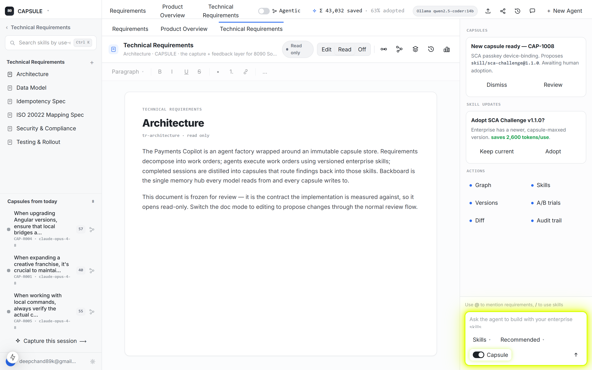
CAPSULE workspace — split sidebar with scrollable Capsules (CAP-R001..R008) and the super-saiyan Capture button.
Local-model distillation
Your own machine writes the capsule — private and free
Reading the session and writing the capsule runs on qwen2.5-coder:14b via Ollama, on your own GPU. The pipeline is local-first, with an optional Cerebras llama-3.3-70b boost (only if a key is set) and a heuristic last resort — so a capsule always renders, even fully offline.
Two wins: privacy — a bank's payment code never leaves the machine just to be summarized; and cost — the remembering is free, so capturing a lesson never costs more than it saves. Expensive cloud models do the building; the cheap local model does the remembering.
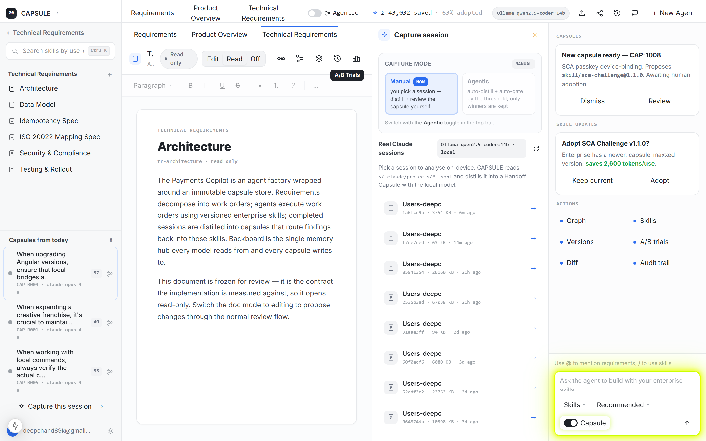
Capture — MANUAL mode: pick a real ~/.claude session to distill on-device into a Handoff Capsule.
Agentic capture gate
Keep the good lessons automatically — drop the noise
An agentic mode decides automatically: keep the capsule (and let its skill update adopt) when its transfer score is at or above the threshold, OR when novelty is ≥ 80. The threshold defaults to 50 and runs 0–100. A high-transfer lesson or a genuinely new discovery is kept and routed on its own; a thin, low-novelty session is dropped.
Like a smart spam filter for lessons. Without gating, the registry would drown in noise and humans would rubber-stamp everything — and a clearing capsule is only proposed on a promotion/<skill> ref, published by agentic CI only if the measured reward improves.
Agentic capture gate — auto-distill a real session on-device, then the keep/skip verdict against the threshold.
Knowledge Graph + provenance
A map of how everything connects — and why each version exists
A live map links requirements → work orders → agents → skills → capsules → memory. Click any skill node and it shows a provenance chain — the answer to "why does this version exist?" — tracing it back to the exact capsule, session, finding, work order, and requirement that created it.
In a regulated business, "the AI changed something" isn't enough — an auditor needs why. The graph turns every change into a traceable chain, so the whole learning loop is accountable. Nothing is a mystery.
Knowledge Graph Play — requirements → work orders → agents → sessions → capsules → skills → memory.
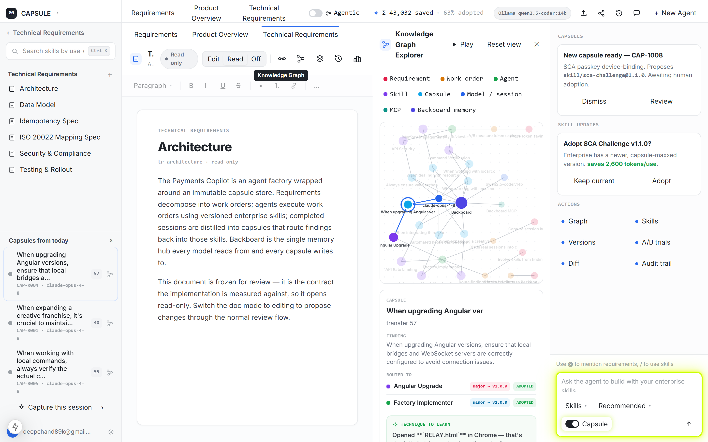
Skills Registry
The company's library of reusable skills
The shelf of packaged know-how an agent picks up and applies. Seven skills here, each forged from a real session — Angular Upgrade, Command Verification, API Security, Memory Management, Creative Franchise Expansion, Automation Maintenance, API Rate Limiting. A free-text recommender suggests the right one for whatever you're working on.
Skills are where the learning accumulates: a capsule is a single lesson; a skill is the running total of every lesson on a topic. The registry hands the agent proven know-how instead of a guess — that's how one agent's discovery lifts everyone.
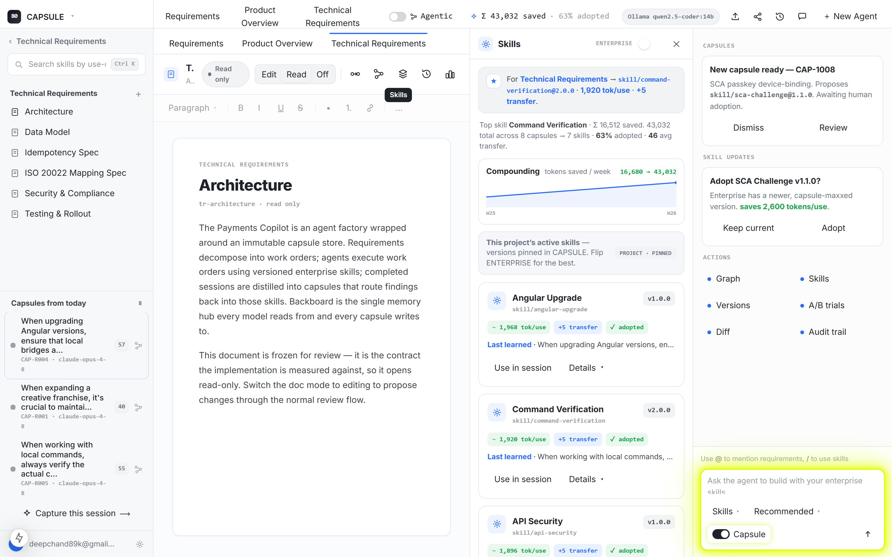
Skills panel — Enterprise OFF: project-pinned versions, condensed cards with fluorescent action buttons.
Enterprise toggle
Flip to the most-learned "capsule-maxxed" best version
One switch that says "use the best, most-learned version of every skill." On, the panel serves the capsule-maxxed build (most lessons absorbed, most tokens saved); off, you see the versions pinned in this project. A banner makes the mode obvious: ENTERPRISE · BEST vs PROJECT · PINNED.
Learning is worthless if people keep using the old version. The toggle makes adopting improved skills a one-click decision — so the savings the loop generates actually reach every seat on the plan.
Enterprise toggle — skill cards flip from project-pinned to the capsule-maxxed enterprise-best versions in blue.
Versions + compare
Every skill change is numbered and comparable
Every skill is semver'd — major is a behavior rethink, minor a new capability, patch a small fix. The newest published version wears a blue Latest badge; a pending one wears Proposed. Tick Compare on any two versions to drop into a word-level diff of changelog + guidance — added words green, removed words struck red.
You can see how a skill got smart over time. Command Verification went 1.0.0 (CAP-R007: inspect state, don't assume) → 2.0.0 (CAP-R005: verify the actual current state, −1,920 tokens/use). Track-changes for know-how.
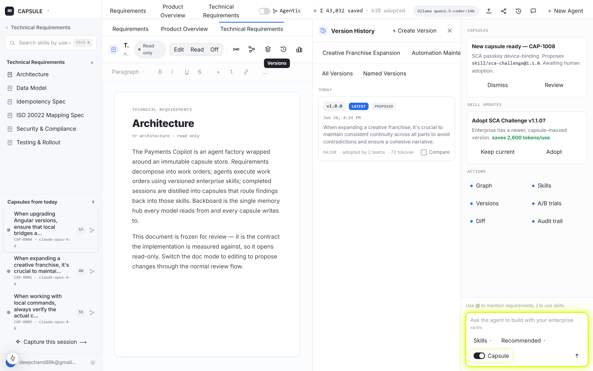
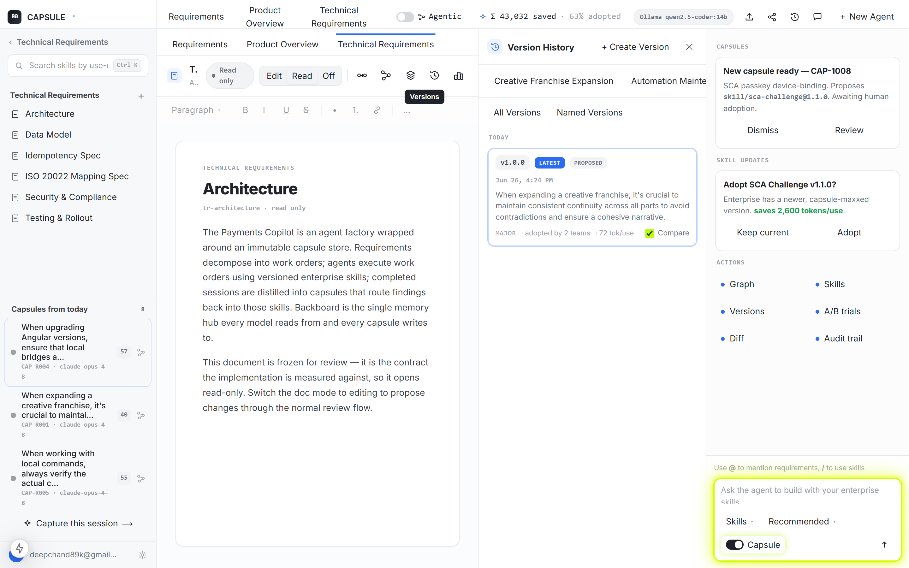
A/B Trials — measured
Same task, with the capsule vs without — see the win
A head-to-head test: the same task run once with the capsule recalled, once cold. You see tokens spent, steps, duration, transfer score, and pass/fail — and these are measured Ollama token counts (prompt_eval + eval), not a story.
This is the proof the loop works. AB-03: 247 vs 404 tokens, −39%. AB-01 cut 142; AB-02 honestly measured 0 on a single-shot task — we show the zero rather than fake it. This same harness is what agentic CI uses to decide whether a new version may publish.
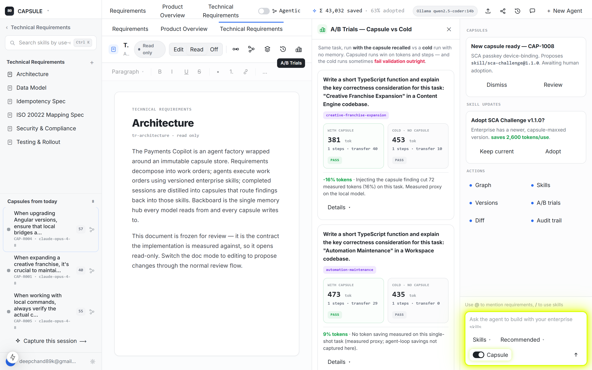
A/B Trials — Capsule vs Cold: measured tokens, steps and pass/fail per task; capsuled runs win.
Warm start
The next agent opens with the briefing already in hand
When a new session starts on a familiar topic, CAPSULE hands it the "You inherit" briefing — the distilled finding, the gotchas, and the technique — so the agent begins warm instead of cold. The handoff result shows the briefing alongside the measured cold-vs-warm run.
This is the handoff theme made concrete: memory follows the team, not the model. The first agent's afternoon becomes the next agent's opening line — no restart, no re-derivation.
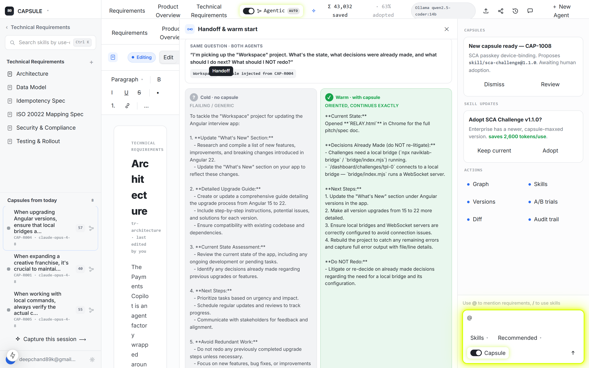
Handoff & warm start — the 'You inherit' briefing plus the measured cold-vs-warm result from running both agents.
The super-saiyan Capsule toggle
Inject the latest capsule into the composer — the yellow aura blooms
Flip the Capsule context toggle and the composer lights up with a yellow super-saiyan aura as the latest capsule is injected into the prompt. The matching Agentic toggle shares the same energized ON state — a single, unmistakable signal that the session is now running with memory.
It makes the abstract concrete: you can see the moment the agent stops working from scratch and starts working from everything the company has already learned. Capsule ON is the difference between cold and warm.
Capsule context toggle — the composer's yellow super-saiyan aura blooms as the latest capsule is injected.
Backboard memory
The memory follows the team, not the model
Backboard is the shared store where every capsule lives — and these are live writes (real thread_ids) to app.backboard.io/api. Memory belongs to the tenant (assistant_id: capsule), one thread per project, skill memories tagged <skillId>@<semver>. Writes store only the distilled briefing (send_to_llm:false) — storage, not inference.
Models change fast. If your knowledge were trapped inside one model, every upgrade would reset you to zero. Backboard makes it model-independent — swap Opus → Sonnet → Haiku and every capsule is still there — and its semantic memory is what dedups near-identical capsules into one canonical lesson.
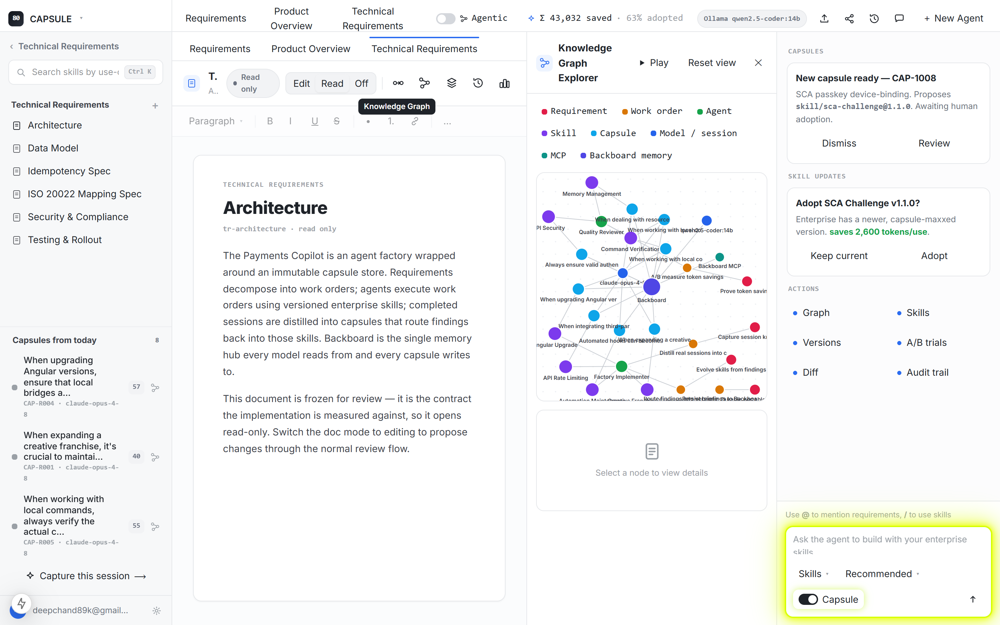
Backboard is the indigo hub every capsule connects to with a "stores" line and every model with a "reads" line.
Enterprise vs personal — the multi-dev flow
Shared best vs pinned, and how a local lesson graduates to enterprise
Skills live in a real git repo: one enterprise master, three dev personal branches (dee, ven, saim) that pin enterprise skills and contribute capsules back. A lesson graduates by PR, never a push — proposed on a promotion/<skill> ref, merged only if agentic CI measures the reward improving; near-identical capsules dedup, contradictions escalate.
It's the company's master cookbook with a tasting panel: anyone can submit a recipe, but it only enters the book after a blind taste-test proves it's better — and two cooks submitting the same dish get merged into one credited entry.
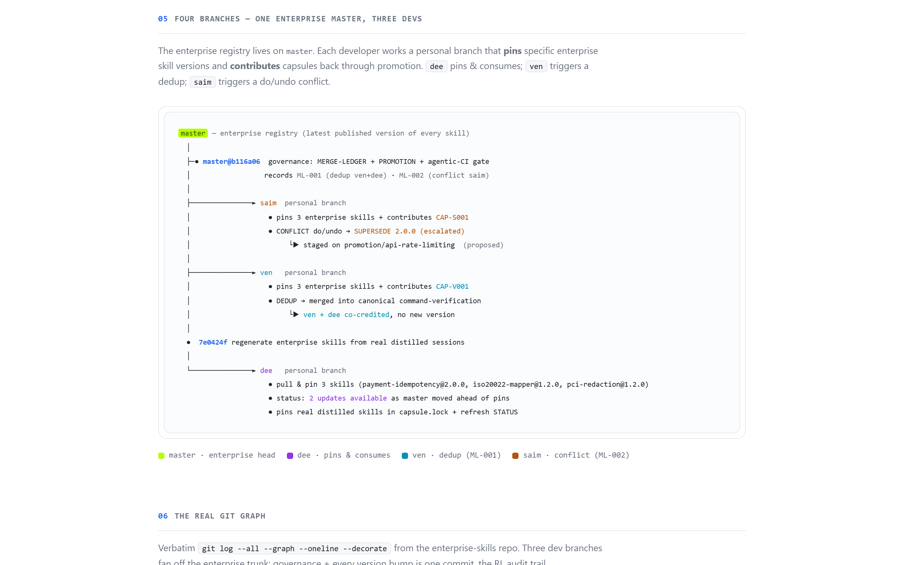
Four branches: one enterprise master, three dev personal branches that pin enterprise skills and contribute capsules back.
Workspace UX
Read-only review · @-mentions · resizable panels
The everyday document-editor chrome that makes CAPSULE feel like a real workspace, not a dashboard: a document can be set read-only (the toolbar dims, the surface goes inert for review); the composer takes @-mentions to tie the conversation to real requirements; and the side panel drags wide (up to 680px) so the graph and cards fill the extra space.
CAPSULE's value is the loop, but people only adopt tools that feel natural. These are the familiar affordances that make the deep features reachable.
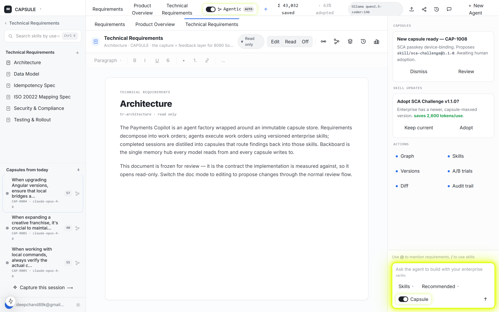
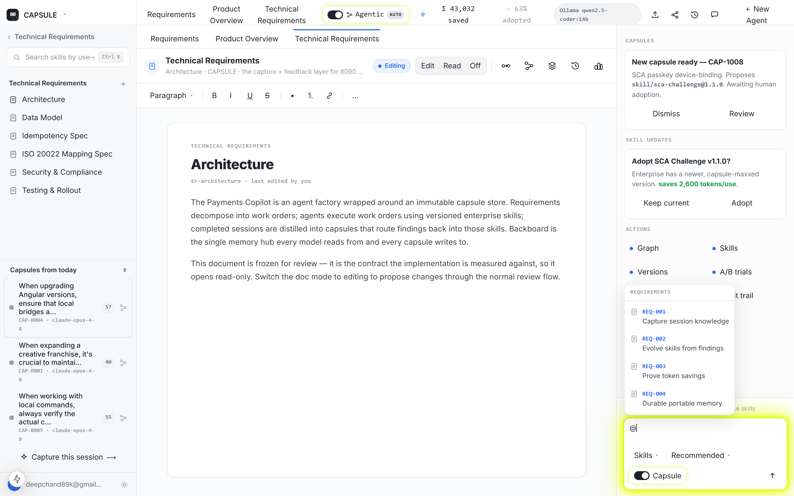
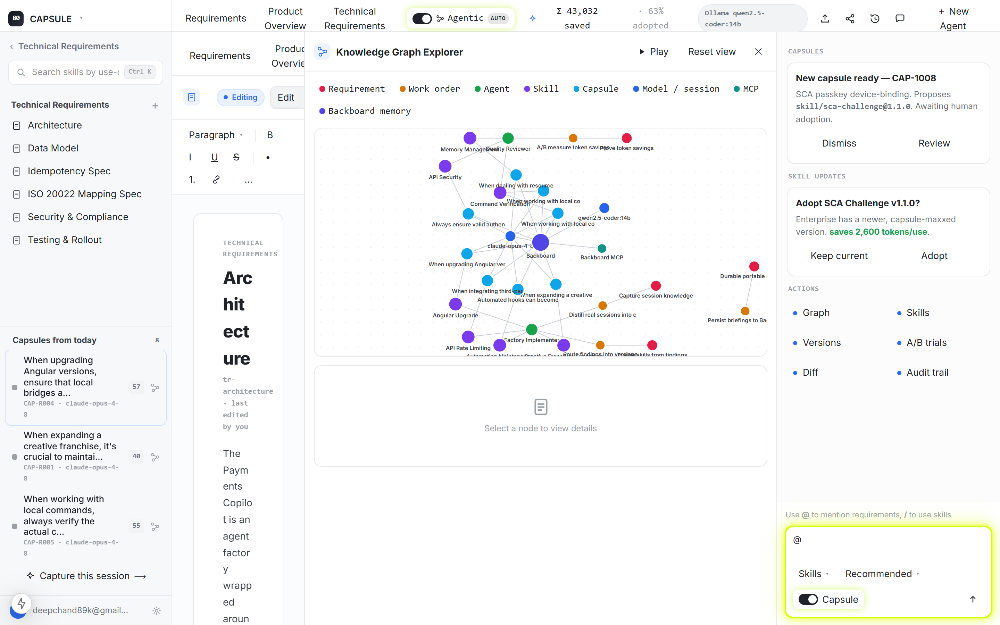
The reward signal
The loop compounds — and that's the whole point.
More sessions → better skills → cheaper sessions → which produce more lessons. The savings curve bends from 16,680 tokens in week one to 43,032 the next.
~Honest about what's real
Real & measured: session reading, local distillation, the 8 capsules, the 7 skills + semver, the 3 A/B token deltas, the live Backboard writes, and the git repo. Derived (clearly labeled): novelty scores, non-A/B per-capsule tokensSaved estimates, and the requirements/work-orders scaffolding. We tell you exactly where the real line is.
CAPSULE — introduced to the world
Context dies at the session boundary.
We make it survive.
Locally, auditably, for the whole company. That's the handoff, the flow, the confidence, and the junior — all from one root cause.
cd relay && npm run dev → localhost:3010